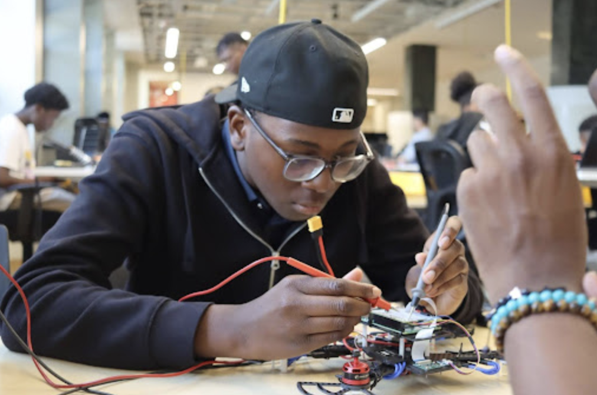
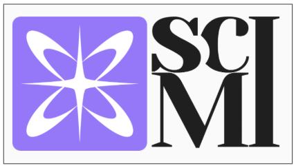
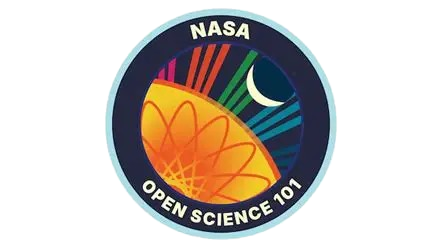
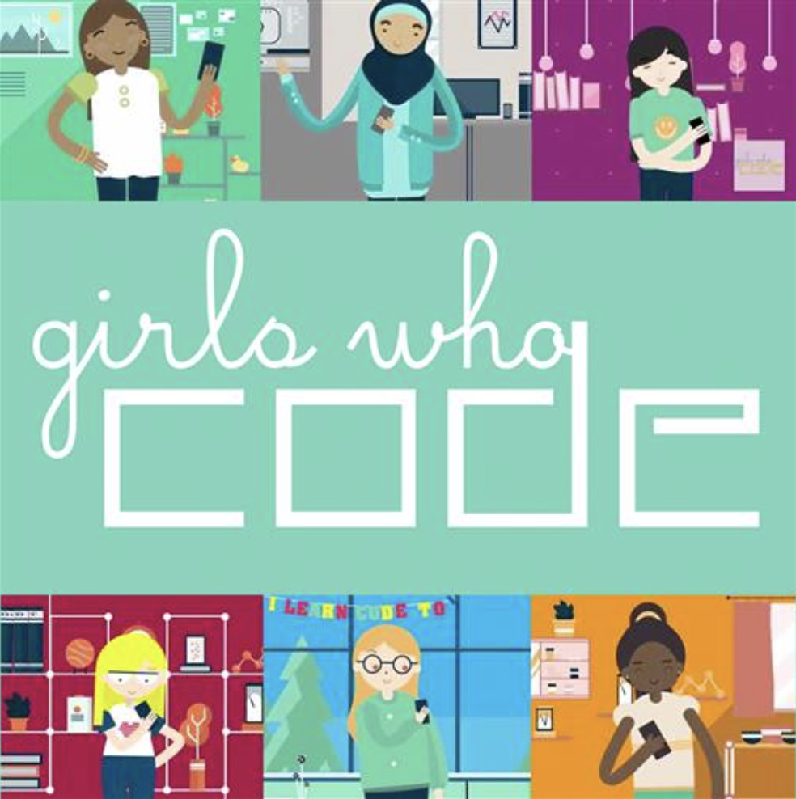

Tech/STEM Portfolio
Experience
Howard's Amazon Drone Academy Participant
I completed Amazon’s competitive Drone Academy program, where I gained hands-on experience in building, programming, and flying drones. I developed technical skills in hardware assembly, systems integration, and flight software, while also strengthening soft skills such as teamwork, problem-solving, and professional communication through collaborative projects and mentorship.
Sci Mi Electrical Engineering Research Program Participant
I participated in the Sci Mi Electrical Engineering Research Program Program as an asynchronous student. During this program, we learned the fundamentals of electrical engineering and performed different experiments and labs where we learned how to apply the skills learned. We participated in research lectures, labs, and journal club (where we learnt to analyze journals and extract the key information). Some of the topics we went over were: signal processing, electromagnetics, circuits, digital design, and embedded systems. We were encouraged to create research papers and posters to present at the end of program symposium. Currently, I am in the process of getting two papers published on Neuromorphic Computing, their algorithms, models, and learning methods.
Earned Nasa OpenSci Certificate
I earned the NASA OpenSci Certificate, completing training in open science principles, data sharing, and reproducible research practices. This program strengthened my ability to work with scientific data, collaborate effectively across research teams, and contribute to transparent, accessible research in alignment with NASA’s open science initiatives.
Girls Who Code Pathways Member
I participated as a Girls Who Code Pathways Member, gaining exposure to real-world applications of computer science and expanding my coding skills through workshops, mentorship, and professional development opportunities. I completed the web development course, the cybersecurity course, and data science + ai course, learning multiple crucial coding and computer science skills like html, css, python, etc. This experience strengthened my technical skills in programming and problem-solving, while also helping me build a network of peers and industry professionals in tech.